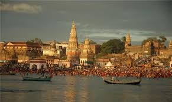
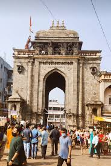
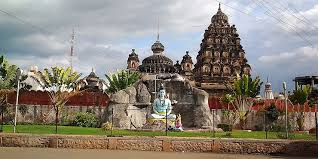

Siddheshwar Temple
Siddheshwar Temple is one of the most important spiritual landmarks in Solapur. Dedicated to Lord Siddheshwar, a form of Lord Shiva, the temple is located near Siddheshwar Lake in the center of the city.


Siddheshwar Temple is one of the most important spiritual landmarks in Solapur. Dedicated to Lord Siddheshwar, a form of Lord Shiva, the temple is located near Siddheshwar Lake in the center of the city.
Pandharpur is one of the most sacred pilgrimage towns in Maharashtra located about 70 km from Solapur. It is famous for the Vitthal Rukmini Temple dedicated to Lord Vitthal.


Tuljapur is a famous pilgrimage town known for the Tulja Bhavani Temple dedicated to Goddess Bhavani. It is one of the important Shakti Peethas in Maharashtra.



Akkalkot is another important spiritual destination located about 40 km from Solapur. It is famous for the temple of Shri Swami Samarth Maharaj.
Solapur Fort, also called Bhuikot Fort, is a historic monument located in the city. The fort reflects the military architecture of medieval India.